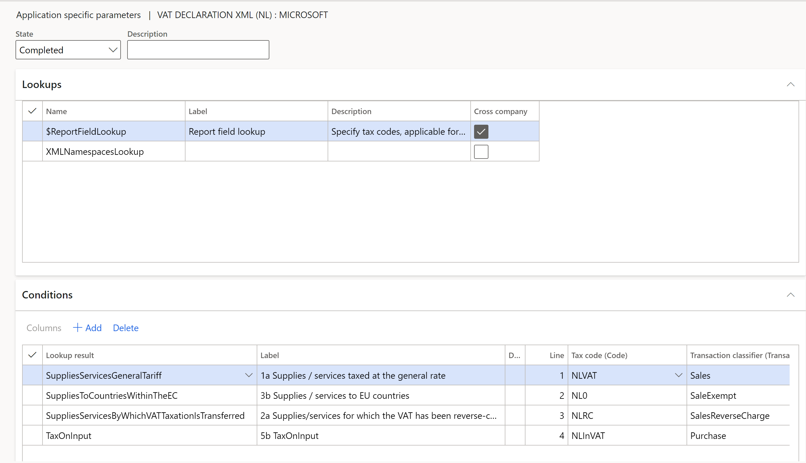
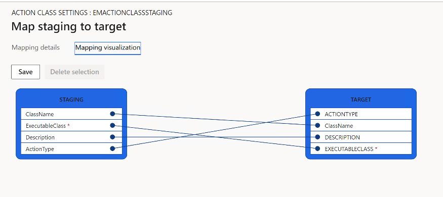
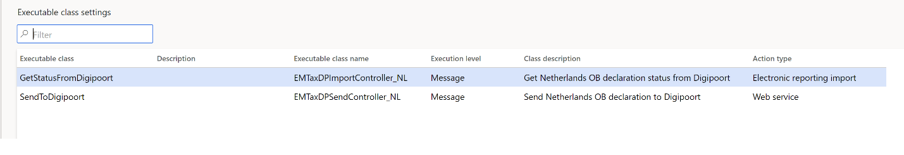

VAT declaration for Netherlands
[!include[banner](../includes/banner.md)][!include[banner](../includes/preview-banner.md)]To automatically generate the VAT declaration, you must create enough sales tax codes to keep a separate VAT accounting for each box on the VAT declaration. Additionally, in the application-specific parameters of the VAT declaration electronic reporting format, you must associate sales tax codes with the lookup result of the lookup for the VAT declaration boxes. For more information about how to set up application-specific parameters, see Set up application parameters for declaration fields later in this topic.
In the following table, the Lookup result column shows the lookup result that is preconfigured for a specific VAT declaration row in the VAT declaration format. Use this information to correctly associate sales tax codes with the lookup result and then associate that with the row of the VAT declaration. The Tax base (XML element) / Tax (XML element) column list the names of the corresponding XML elements in VAT declaration XML (NL) format.
Note
If you configure sales tax codes to post incoming reverse charge VAT by using use tax, associate your sales tax codes with the lookup result that contains UseTax in the name. For example, for Row 2a Supplies/services for which the VAT has been reverse-charged to you, configure the SuppliesServicesByWhichVATTaxationIsTransferredUseTax lookup result for Use tax sales tax codes, or configure the SuppliesServicesByWhichVATTaxationIsTransferred lookup result for sales tax codes that have a reverse charge. For more information about how to configure reverse charge VAT, see Reverse charges.
VAT declaration overview
The VAT declaration format in Netherlands contains the following information.
|
Box |
Description |
Lookup result |
Tax base (XML element) / Tax (XML element) |
|
1 |
Goods or services in the Netherlands |
|
|
|
1a |
Supplies/services taxed at the general rate |
SuppliesServicesGeneralTariff |
TaxedTurnoverSuppliesServicesGeneralTariff / ValueAddedTaxSuppliesServicesGeneralTariff |
|
1b |
Supplies/services taxed at the reduced rate |
SuppliesServicesReducedTariff |
TaxedTurnoverSuppliesServicesReducedTariff / ValueAddedTaxSuppliesServicesReducedTariff |
|
1c |
Supplies/services taxed at other rates, except 0% |
SuppliesServicesOtherRates |
TaxedTurnoverSuppliesServicesOtherRates / ValueAddedTaxSuppliesServicesOtherRates |
|
1d |
Private use |
PrivateUse |
TaxedTurnoverPrivateUse / ValueAddedTaxPrivateUse |
|
1e |
Supplies/services taxed at 0% or not taxed at your level |
SuppliesServicesNotTaxed |
SuppliesServicesNotTaxed / x |
|
2 |
Domestic reverse-charge mechanisms |
|
|
|
2a |
Supplies/services for which the VAT has been reverse-charged to you |
SuppliesServicesByWhichVATTaxationIsTransferred
SuppliesServicesByWhichVATTaxationIsTransferredUseTax |
TurnoverSuppliesServicesByWhichVATTaxationIsTransferred / ValueAddedTaxSuppliesServicesByWhichVATTaxationIsTransferred |
|
3 |
Goods and services to/in foreign countries |
|
|
|
3a |
Supplies to non-EU countries (export) |
SuppliesToCountriesOutsideTheEC |
SuppliesToCountriesOutsideTheEC / x |
|
3b |
Supplies/services to EU countries |
SuppliesToCountriesWithinTheEC |
SuppliesToCountriesWithinTheEC / x |
|
3c |
Installation/distance sales within the EU |
InstallationDistanceSalesWithinTheEC |
InstallationDistanceSalesWithinTheEC / x |
|
4 |
Goods and services supplied to you from abroad |
|
|
|
4a |
Supplies/services from non-EU countries |
SuppliesFromCountriesOutsideTheEC
SuppliesFromCountriesOutsideTheECUseTax |
TurnoverFromTaxedSuppliesFromCountriesOutsideTheEC / ValueAddedTaxOnSuppliesFromCountriesOutsideTheEC |
|
4b |
Supplies/services from EU countries |
SuppliesFromCountriesWithinTheEC
SuppliesFromCountriesWithinTheECUseTax |
TurnoverFromTaxedSuppliesFromCountriesWithinTheEC / ValueAddedTaxOnSuppliesFromCountriesWithinTheEC |
|
5 |
Input tax and grand total |
|
|
|
5a |
Sales tax payable |
1a + 1b + 1c +1d + 2a + 4a + 4b |
X / ValueAddedTaxOwed |
|
5b |
Input tax |
ValueAddedTaxOnInput
SuppliesServicesByWhichVATTaxationIsTransferredUseTax
SuppliesFromCountriesOutsideTheECUseTax
SuppliesFromCountriesWithinTheECUseTax
|
x / ValueAddedTaxOnInput |
|
5c |
Subtotal |
|
x |
|
5d |
Tax relief under the small businesses scheme |
SmallEntrepreneurProvisionReduction |
x / SmallEntrepreneurProvisionReduction |
|
5g |
Net VAT amount that will be paid to the tax authorities or reclaimed |
5a + 5b + 5d |
x / ValueAddedTaxOwedToBePaidBack |
Set up VAT declaration for Netherlands
Import electronic reporting configurations
To import Electronic reporting (ER) configurations, go to Workspaces > Electronic reporting, and import the following or higher versions of electronic reporting formats:
- Tax declaration model.version.85
- Tax declaration model mapping.version.85.138
- VAT Declaration XML (NL).version.85.14
- VAT Declaration Excel (NL).version.85.14.17
Set up application specific parameters for VAT declaration fields
To automatically generate a VAT declaration, associate sales tax codes and report fields in the ER configuration. To set up report fields, follow these steps:
- Go to Workspaces > Electronic reporting, and then select Reporting configurations.
- Select the VAT declaration XML (NL) configuration, and then select Configurations > Application specific parameters setup.
- On the Lookups FastTab, select $ReportFieldLookup .
- On the Conditions FastTab, associate the sales tax codes and report fields.
|
Column |
Description |
|
Lookup result |
Select the report field for setup. For more information about the report fields and their assignment to VAT declaration rows, see the section, [VAT declaration overview](#vat-declaration) in this topic. |
|
Tax code |
Select the sales tax code to associate with the report field. Posted tax transactions that use the selected sales tax code are collected in the appropriate report field. Separate the sales tax codes so that one sales tax code generates amounts in only one report field. |
|
Transaction classifier |
If you didn't create enough sales tax codes so that one sales tax code generates amounts in only one report field, set up a transaction classifier. The following transaction classifiers are available: o Purchase o PurchaseExempt (tax-exempt purchase) o PurchaseReverseCharge (tax receivable from a purchase reverse charge) o Sales o SalesExempt (tax-exempt sale) o SalesReverseCharge (tax payable from a purchase reverse charge or a sales reverse charge) o Use tax For each transaction classifier, a classifier for the credit note is also available. For example, one of these classifiers is PurchaseCreditNote (purchase credit note). |

Set up XSD schema and namespaces
To set up XSD schema and namespaces, follow these steps:
On the Lookups FastTab, select XMLNamespacesLookup.
On the Conditions FastTab, define the path to the XSD schema under XSDSchema name and the path to the schema instance data under SchemaInstanceData.
Name Lookup result XSDSchema http://www.nltaxonomie.nl/nt15/bd/20201209/entrypoints/bd-rpt-ob-aangifte-2021.xsd SchemaInstanceData http://www.nltaxonomie.nl/nt15/bd/20201209/dictionary/bd-data For information about how to get these values from official documentation, see How-to get XSD schema and namespaces for the Dutch taxonomy.
Note
If you don’t set up transmission of VAT declaration to Digipoort, you can configure any value in the lookup result.
In the State field, select Completed.
On the Action Pane, select Export to export the parameters to an XML file.
Select the VAT declaration Excel (NL) configuration, and then, on the Action Pane, select Import to import the parameters that you configured for VAT declaration XML (NL)
In the State field, select Completed.
Set up VAT reporting format
To set up VAT reporting format, follow these steps:
- Go to General ledger > Setup > General ledger parameters.
- If you configure VAT declaration for multiple VAT registrations, on the tab Sales tax, on the Electronic reporting for countries/regions FastTab, for the NLD country/region line, select the ER format, VAT Declaration Excel (NL).
Preview VAT declaration in Excel
Preview VAT declaration in Excel from the periodic task, Report sales tax for settlement period
To preview VAT declaration in Excel, follow these steps:
- Go to Tax > Periodic tasks > Declarations > Sales tax > Report sales tax for settlement period.
- Enter the following information.
|
Field |
Description |
|
Settlement period |
Select the settlement period. |
|
Sales tax payment version |
Select one of the following values: o Original: Generate a report for sales tax transactions of the original sales tax payment or before the sales tax payment is generated. o Corrections: Generate a report for sales tax transactions of all the subsequent sales tax payments for the period. The Sales tax payment version field is set to Latest corrections. o Total list: Generate a report for all sales tax transactions for the period, including the original and all corrections. |
|
From date |
Select the first date of the reporting period. |
- Select OK and review the Excel file that is generated.
Settle and post sales tax
To settle and post sales tax, follow these steps:
- Go to Tax > Periodic tasks > Declarations > Sales tax > Settle and post sales tax.
- Enter the following information.
|
Field |
Description |
|
Settlement period |
Select the settlement period. |
|
Sales tax payment version |
Select one of the following values: o Original: Generate the original sales tax payment for the settlement period. o Latest corrections: Generate a correction sales tax payment after the original sales tax payment for the settlement period was created. |
|
From date |
Select the first date of the reporting period. |
- Select OK.
Preview VAT declaration in Excel from a sales tax payment
To preview VAT declaration in Excel from a sales tax payment, follow these steps:
Go to Tax > Inquiries and reports > Sales tax inquiries > Sales tax payments and select a sales tax payment line.
Select Print report and review the Excel file that’s generated for the selected sales tax payment line.
Note
The report is generated only for the selected line of Sales tax payment. If you need to generate a corrective declaration that contains all corrections for the period, or a replacement declaration that contains the original data and all corrections, use the periodic task, Report sales tax for settlement period.
Configure electronic messages for generating VAT declaration in XML
Enable the feature
To enable the Configure electronic messages for generating VAT declaration in XML feature, go to Workspaces > Feature management and enable the feature, [EM] Executable class action type.
Modify target mapping
To modify target mapping, follow these steps:
Go to Workspaces > Data management, and select Target entities.
Select the data entity Action class settings and then select Modify target mapping.
Make sure that the staging field Action type is mapped to the target.

You can map to the target manually, or on the Mapping details tab, select Generate mapping > Yes.
Upload the electronic messages data package
To upload the electronic messages data package, follow these steps:
In the Lifecycle Services (LCS) shared asset library, on the Data packages tab, download the latest version of data package, NL VAT declaration EM package.
In Dynamics 365 Finance, in the Data management workspace, select Import.
In the Job details section, set the following values:
- Name: Enter a name for the job: NL VAT declaration.
- Data source format: Select select Package.
In the Upload data file field, select Upload, and then select the NL VAT declaration EM package.zip file.
After the data entities are uploaded, select Import.
Go to Tax > Inquiries and reports > Electronic messages > Electronic messages and validate the electronic message processing that you imported.
Processing Name Description NL VAT declaration Omzetbelasting aangifte VAT declaration in the Netherlands Go to Tax > Setup > Electronic messages > Executable class settings. Verify the following :
- The executable class NLOBGetStatusFromDidgipoort has the Electronic reporting import action type.
- The executable class NLOBSendToDigipoort has the Web service action type.

For each line, select Parameters, and then select NLOB Request ID in the Request ID field.
Configure electronic messages
To configure electronic messages, follow these steps:
- Go to Tax > Setup > Electronic messages > Populate records actions, select the line, and then select Edit query.
- Use the filter to specify the settlement periods to include in the report.
- If you must report tax transactions from other settlement periods in a different declaration, create a new Populate records action, and select the appropriate settlement periods.
Set up electronic transmission of tax declarations to Digipoort
Digipoort is the service that is used to transmit declarations to the Dutch government. Digipoort works as an electronic post office: it receives a message, checks the message, and then confirms receipt of the message.
For more information, see Set up electronic transmission of tax declarations to Digipoort.
Generate VAT declaration in XML for Netherlands and send to Digipoort
Generate a VAT declaration from electronic messages and send to Digipoort
The following steps are applicable to the example electronic message processing that you imported.
Go to Tax > Inquiries and reports > Electronic messages > Electronic messages**.
In the left pane, select the report format to generate. For example, select NL VAT declaration.
On the Messages FastTab, select New, and then, in the Run processing dialog box, select OK.
Select the message line that is created, enter a description, and then specify the start and end dates for the declaration.
Note
Steps 5-7 are optional.
On the Messages FastTab, select Collect data, and then select OK. As a result, sales tax payments that were generated earlier are added to the message. For more information, see Settle and post sales tax. If you skip this step, you can still generate a VAT declaration by using the Tax declaration version in the Declaration dialog box.
On the Message items FastTab, review the sales tax payments that are transferred for processing. By default, all sales tax payments of the selected period that weren't included in any other message of the same processing are included.
Select Original document to review the sales tax payments, or select Delete to exclude sales tax payments from processing. If you skip this step, you can still generate a VAT declaration by using the Tax declaration version field in the Declaration dialog box.
On the Messages FastTab, select Update status. In the Update status dialog box, select the Ready to generate action, and then select OK. Validate that the message status is changed to Ready to generate.
Select Generate report. To preview the VAT declaration amounts, in the Run processing dialog box, select Preview report, and then select OK.
In the Electronic reporting parameters dialog box, enter the parameters of the VAT declaration, and then select OK. For information about the parameters that are available, see the following table.
Select Attachments in the upper-right corner of the page, and then select Open to open the file. Review the amounts that are in the Excel document.
On the Messages FastTab, select Generate report. In the Run processing dialog box, select Generate report to generate an XML file, and then select OK.
In the Electronic reporting parameters dialog box, enter the following information.
|
Field |
Description |
|
Settlement period |
Select the settlement period. If you selected Collect data in step 5, you can disregard this field. The report will be generated for the sales tax transactions that are included in the collected sales tax payments. |
|
Tax declaration version |
Select one of the following values: o Original: Generate a report for sales tax transactions of the original sales tax payment or before the sales tax payment is generated. o Corrections: Generate a report for sales tax transactions of all the subsequent sales tax payments for the period. The Sales tax payment version field is set to Latest corrections. o Total list: Generate a report for all sales tax transactions for the period, including the original and all corrections.
If you selected Collect data in step 5, you can disregard this field. The report will be generated for the sales tax transactions that are included in the collected sales tax payments. |
|
Tax jurisdiction |
Select Default to use information about the tax representative and the contact person from the fields below. Select Netherlands to use information about the tax representative and the contact person from the Electronic tax declaration parameters page. |
|
Tax representative |
If declaration is provided by the tax representative, select Tax consultant from the list of parties. Registration ID, first name, middle name, last name, personal title, and contact information of type Phone must be specified for the selected party and will be exported to the XML file. |
|
Contact person |
Select the employee who created the report. The first name, last name, and telephone number of the employee must be specified and will be exported to the XML file. |
- Select OK. When the declaration in XML format has been generated, the status of the message is changed to Report generated.
If an error occurs while the report is being generated, the status of the message is changed to Report generation error.
- Select Attachments, and then select Open to open the file. Review the file, and if it is correct, select Send report to send the report to Digipoort. The report will be sent to Digipoort and status of the message will be changed to Report sent.
If an error occurred during sending of the report, the status of the message is changed to:
- Report sending error (technical): If an error occurs on the Finance side and the file didn’t reach Digipoort.
- Report sending error (business): If an error occurred on the Digipoortside after reaching Digipoort.
- Select Import response to get a response from the Digipoort on the sent message. The response from Digipoort will be imported and status of the message will be changed to Report acknowledged.
If an error occurred during receiving of the status, the status of the message is changed to:
- Report getting status error (business): If Digipoort didn’t acknowledge the report. In this case, the Infolog shows a list of errors received from Digipoort. To review list of errors later, on the Action log FastTab, select a line with Get report status, and select Attachments. Review the list of errors in the Notes field.
- Report getting status error (technical): If a technical error occurred when importing the response from Digipoort.
Run a VAT declaration for several legal entities
To use the formats to report the VAT declaration for a group of several legal entities, first set up the application-specific parameters of the ER formats for sales tax codes from all required legal entities.
Set up electronic messages to collect data from several legal entities
To set up electronic messages to collect data from several legal entities, follow these steps:
Go to Workspaces > Feature management, find Cross-company queries for the populate records actions in the list, and then select Enable now to turn on the feature.
Go to Tax > Setup > Electronic messages > Populate records actions.
On the Populate records action page, in the Datasources setup grid, a new Company field is available. For existing records, this field shows the identifier of the current legal entity.
In the Datasources setup grid, add a line for each additional legal entity that must be included in reporting, and enter the following information.
Field Description Name Enter a value that will help you understand where this record comes from. For example, enter VAT payment of Subsidiary 1. Message item type Select VAT return. This is the only value that is available for all the records. Account type Select All. Master table name Specify TaxReportVoucher for all the records. Document number field Specify Voucher for all the records. Document date field Specify TransDate for all the records. Document account field Specify TaxPeriod for all the records. Company Select the ID of the legal entity. User query The check box is automatically selected when you define criteria by selecting Edit query. For each new line, select Edit query, and specify a related settlement period for the legal entity that is specified in the Company field on the line.
When setup is complete, the Collect data function on the Electronic messages page will collect sales tax payments from all legal entities that you define here.
Submit your requests to the Documentation Team